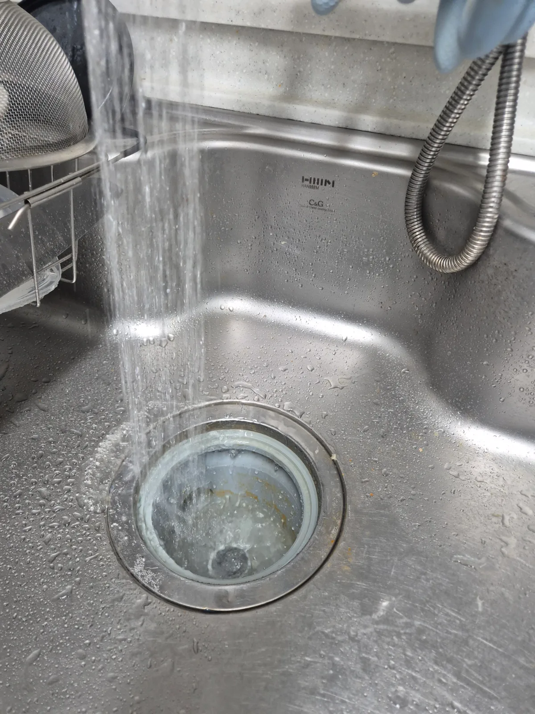
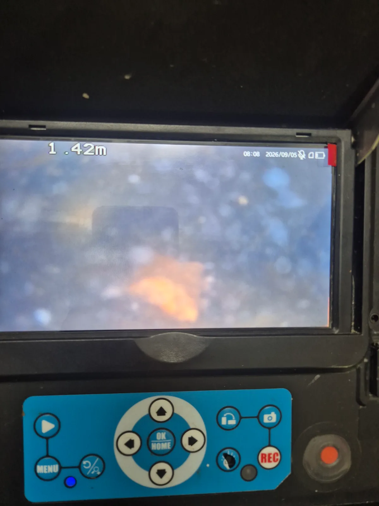

강동구 천호동 싱크대막힘, 현장 도착 후 진단
강동구 천호동 현장에 도착한 뒤 먼저 싱크대의 배수 상태를 확인했습니다. 싱크대막힘은 배수구 입구만 일시적으로 뚫는 것보다 배관 어느 구간에서 흐름이 방해받고 있는지 확인하는 과정이 중요합니다.
신라건축설비는 변기막힘·싱크대막힘·하수구막힘을 전문적으로 처리하는 숙련 기술자가 현장 상태를 확인하고 필요한 장비와 공법을 선택합니다. 이번 현장 역시 배관 내시경을 투입해 약 1m 이상 내부 구간까지 점검하면서 배관의 오염 상태와 막힘 구간을 확인했습니다.
1단계: 증상 확인과 필요한 장비 작업
먼저 석션 장비를 이용해 배관 내부에 남아 있는 물과 흡입 가능한 이물질을 제거했습니다. 단순히 물길만 일시적으로 확보하는 데 그치지 않고 내시경으로 내부 상태를 계속 확인하면서 추가 작업이 필요한 구간을 점검했습니다.
석션 작업 이후에도 배관 내부에 제거가 필요한 오염물이 남아 있는 상태를 확인해 샤프트 작업을 이어서 진행했습니다.

2단계: 원인 구간 처리와 정상 작동 확인
샤프트 장비를 배관 내부에 투입해 배수 흐름을 방해하는 이물질과 오염물을 제거했습니다. 배관 구조와 내부 상태를 확인하면서 작업 범위를 조절했으며, 내시경 진단과 석션·샤프트 작업을 복합적으로 운용해 막힘 구간을 처리했습니다.
작업을 마친 뒤에는 배관 내시경으로 내부 상태를 다시 점검하고 싱크대에서 충분한 양의 물을 흘려보냈습니다. 물이 정체되거나 다시 올라오는 현상이 없는지 확인하면서 최종 통수 상태까지 점검했습니다.

작업 결과와 재발 방지 안내
석션과 샤프트 작업 후 싱크대의 배수 흐름이 원활하게 확보됐으며 최종 통수검사까지 완료했습니다. 싱크대 배관은 사용 과정에서 각종 이물질과 오염물이 누적될 수 있기 때문에 배수가 이전보다 느려지거나 물이 고이는 증상이 반복된다면 단순한 배수구 청소보다 배관 내부 상태를 확인하는 것이 중요합니다.
이번 강동구 천호동 싱크대막힘 현장처럼 신라건축설비는 단순히 물길만 확보하는 작업에 그치지 않고 배관 내시경을 이용해 내부 상태를 확인한 뒤 석션·관통·샤프트·고압세척 등 현장에 적합한 공법을 선택합니다.
생활 속 싱크대막힘부터 변기막힘·하수구막힘은 물론, 점검 과정에서 공용배관이나 오수관의 문제 또는 배관 보수가 필요한 상황이 확인될 경우 더 큰 규모의 배관 작업까지 연계해 대응할 수 있습니다. 서울 전 지역과 경기권 현장에 신속하게 출동해 막힘 진단부터 전문 장비 작업, 배관 보수 및 공사까지 현장 상황에 맞춰 대응하고 있습니다.
최종 조치: 배관 내시경 진단을 바탕으로 석션 작업과 샤프트 작업을 순차적으로 진행했습니다. 배관 내부의 이물질과 오염물을 제거해 물길을 확보한 뒤 다시 내부 상태를 확인하고, 싱크대에 충분한 양의 물을 흘려보내 최종 통수검사까지 진행했습니다.
현장 방문 전 확인하는 비용과 작업 범위
신라건축설비는 현장 증상과 배관 구조를 확인한 뒤 필요한 작업과 예상 비용을 안내합니다. 단순 관통으로 해결되는지, 배관내시경·석션·고압세척 또는 추가 장비가 필요한지는 현장 상태에 따라 달라집니다. 출장비와 야간 작업비, 추가 장비 비용이 발생할 수 있는 경우 작업 전에 먼저 설명하고 동의를 받은 범위에서 진행합니다.
업체를 선택할 때 확인할 사항
무조건적인 ‘0원’ 표현보다 실제 작업 범위, 추가 비용 조건, 사용 장비와 사후 대응 기준을 확인하는 것이 중요합니다. 해결되지 않았을 때의 비용 기준과 작업 후 동일 증상 발생 시 점검 범위를 사전에 문의해두면 불필요한 분쟁을 줄일 수 있습니다.
강동구 싱크대막힘 자주 묻는 질문
싱크대 물이 천천히 내려가면 바로 점검해야 하나요?
싱크대 사용 시 물이 원활하게 빠지지 않는 배수 불량 증상이 발생했습니다. 생활에 불편이 커질 수 있는 상황으로, 싱크대막힘 전문 장비를 준비해 신속하게 현장으로 출동했습니다.처럼 증상이 나타나더라도 원인은 현장마다 다를 수 있습니다. 장비와 배관 구조를 확인한 뒤 필요한 작업 범위를 안내합니다.
작업 전 비용을 알 수 있나요?
작업 전 증상과 현장 여건을 확인해 예상 범위와 비용을 먼저 안내합니다. 변기 탈거, 장비 추가 투입 또는 공용배관 작업이 필요한 경우 고객 동의 없이 임의로 진행하지 않습니다.
약품으로 해결되지 않으면 어떻게 하나요?
완료 후 정상 작동을 함께 확인하고 작업 범위에 따른 사후 안내를 드립니다. 동일 증상이 반복되면 현장 기록을 기준으로 원인을 다시 점검합니다.
싱크대막힘 서울·경기 출동지역
신라건축설비는 강동구 천호동 현장을 포함해 서울 25개 구와 경기도 31개 시·군의 배관 문제를 상담합니다. 현장 거리와 기사 배정 상황에 따라 출동 가능 여부를 먼저 안내드립니다.
서울 전 지역
강남구 · 강동구 · 강북구 · 강서구 · 관악구 · 광진구 · 구로구 · 금천구 · 노원구 · 도봉구 · 동대문구 · 동작구 · 마포구 · 서대문구 · 서초구 · 성동구 · 성북구 · 송파구 · 양천구 · 영등포구 · 용산구 · 은평구 · 종로구 · 중구 · 중랑구
경기도 주요 출동지역
수원시 · 용인시 · 고양시 · 화성시 · 성남시 · 부천시 · 남양주시 · 안산시 · 평택시 · 안양시 · 시흥시 · 파주시 · 김포시 · 의정부시 · 광주시 · 하남시 · 광명시 · 군포시 · 양주시 · 오산시 · 이천시 · 안성시 · 구리시 · 의왕시 · 포천시 · 양평군 · 여주시 · 동두천시 · 과천시 · 가평군 · 연천군